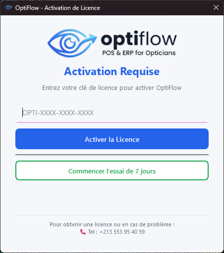
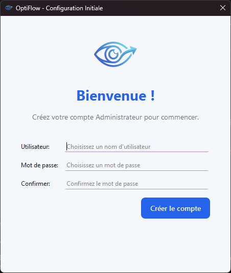
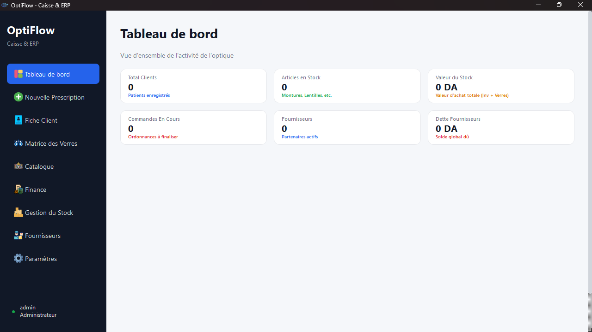

1 Activation et essai gratuit التفعيل والفترة التجريبية
- Au premier lancement, saisissez votre clé de licence (
OPTI-XXXX-XXXX-XXXX) puis cliquez sur « Activer la Licence ». - Sans clé, cliquez sur « Commencer l’essai de 7 jours » : toutes les fonctions sont disponibles.
- Pendant l’essai, « Continuer l’essai » ouvre l’application. Le bandeau indique les jours restants.
- عند التشغيل الأول، أدخل مفتاح الترخيص (
OPTI-XXXX-XXXX-XXXX) ثم اضغط «Activer la Licence». - بدون مفتاح، اضغط «Commencer l’essai de 7 jours» لتجربة كل الوظائف مجانًا.
- أثناء التجربة، يفتح الزر «Continuer l’essai» التطبيق. يعرض الشريط عدد الأيام المتبقية.

2 Première configuration et connexion الإعداد الأول وتسجيل الدخول
- Au premier démarrage, créez le compte Administrateur (nom d’utilisateur et mot de passe).
- Ensuite, connectez-vous à chaque lancement.
- L’Administrateur voit tous les modules. Les autres utilisateurs voient : Tableau de bord, Nouvelle Prescription, Fiche Client, Matrice des Verres et Catalogue.
- عند أول تشغيل، أنشئ حساب المدير (Administrateur) باسم مستخدم وكلمة مرور.
- بعد ذلك، سجّل الدخول في كل مرة تفتح فيها التطبيق.
- يرى المدير جميع الأقسام. أما بقية المستخدمين فيرون: لوحة القيادة، وصفة جديدة، ملف الزبون، مصفوفة العدسات، والكتالوج.

3 Tableau de bord لوحة القيادة
- Page d’accueil : six cartes résument l’activité (clients, articles en stock, valeur du stock, commandes en cours, fournisseurs, dette fournisseurs).
- Les chiffres se mettent à jour automatiquement à chaque ouverture.
- الصفحة الرئيسية: ست بطاقات تلخّص النشاط (الزبائن، المواد في المخزون، قيمة المخزون، الطلبات الجارية، الموردون، ديون الموردين).
- تتحدّث الأرقام تلقائيًا عند كل فتح.

4 Nouvelle Prescription (caisse) وصفة جديدة (الصندوق)
- Patient : tapez le nom dans la recherche et choisissez-le dans la liste. Un indicateur confirme « Patient sélectionné ».
- Articles : choisissez l’onglet (verres, lentilles, montures et autres articles, réparation), sélectionnez l’article puis ajoutez-le au panier.
- Verres : choisissez type, groupe optique, traitement, SPH et CYL. Le prix et le stock s’affichent (vert : en stock, orange : faible, rouge : rupture).
- Panier : vérifiez les lignes, retirez-en avec ✕ ou videz le panier, puis cliquez sur « Finaliser la vente ».
- Paiement : « Payer Avant » (total), « Payer Après » (crédit) ou « Payer en Deux Fois » (acompte). Choisissez Espèces, CIB ou Chèque, vérifiez le reste à payer et cliquez sur « Finaliser la Vente ».
- Le bouton rouge des dettes ouvre les commandes impayées pour encaisser un versement.
- الزبون: اكتب الاسم في البحث واختره من القائمة. يظهر المؤشر «Patient sélectionné».
- المواد: اختر التبويب (عدسات، لينتيل، إطارات ومواد أخرى، تصليح)، حدّد المادة ثم أضفها إلى السلة.
- العدسات: اختر النوع والمجموعة البصرية والمعالجة وقيمتي SPH وCYL. يظهر السعر والمخزون (أخضر: متوفر، برتقالي: قليل، أحمر: نفد).
- السلة: راجع السطور، احذف بالزر ✕ أو أفرغ السلة، ثم اضغط «Finaliser la vente».
- الدفع: «Payer Avant» (المبلغ كاملًا)، «Payer Après» (دَيْن) أو «Payer en Deux Fois» (دفعة أولى). اختر نقدًا أو CIB أو شيكًا، تحقق من المبلغ المتبقي ثم اضغط «Finaliser la Vente».
- يفتح الزر الأحمر للديون الطلبات غير المسدّدة لتسجيل دفعة.
Écran de caisse : recherche patient à gauche, sélection d’articles au centre, panier et total à droite.
شاشة الصندوق: البحث عن الزبون على اليسار، اختيار المواد في الوسط، السلة والمجموع على اليمين.
Fenêtre de paiement : total à payer, trois modes de paiement, montant reçu, reste à payer.
نافذة الدفع: المبلغ الإجمالي، ثلاث طرق للدفع، المبلغ المستلم، المتبقي.
5 Fiche Client ملف الزبون
- Cliquez sur « Ajouter » pour créer un client, puis utilisez la recherche pour le retrouver.
- Ouvrez sa fiche pour saisir la correction optique (OD / OG), les lentilles de contact et consulter l’historique des verres, lentilles et montures.
- Cliquez sur « Enregistrer » en bas de la fiche pour conserver les modifications.
- اضغط «Ajouter» لإنشاء زبون جديد، ثم استعمل البحث للعثور عليه.
- افتح ملفه لإدخال التصحيح البصري (العين اليمنى OD / اليسرى OG) والعدسات اللاصقة، ومراجعة سجل العدسات والإطارات.
- اضغط «Enregistrer» أسفل الملف لحفظ التعديلات.
Liste des clients avec barre de recherche et bouton d’ajout.
قائمة الزبائن مع شريط البحث وزر الإضافة.
Fiche client : onglets de prescription, lentilles de contact, historique des montures.
ملف الزبون: تبويبات الوصفة والعدسات اللاصقة وسجل الإطارات.
6 Matrice des Verres مصفوفة العدسات
- Choisissez l’onglet du type de verre, puis l’affichage : « Prix de Vente » ou « Prix d’Achat ».
- Cliquez sur « Modifier » pour changer les prix directement dans le tableau, puis sur « Enregistrer ».
- En mode modification, le bouton « Stock » de chaque case permet de gérer les quantités par SPH / CYL.
- اختر تبويب نوع العدسة، ثم طريقة العرض: «Prix de Vente» أو «Prix d’Achat».
- اضغط «Modifier» لتغيير الأسعار مباشرة في الجدول، ثم «Enregistrer».
- في وضع التعديل، يتيح الزر «Stock» في كل خانة إدارة الكميات حسب SPH / CYL.
Matrice des prix : groupes optiques en lignes, traitements en colonnes.
مصفوفة الأسعار: المجموعات البصرية في الصفوف والمعالجات في الأعمدة.
Fenêtre de stock d’un verre : sélection SPH / CYL, quantité, liste des entrées.
نافذة مخزون العدسة: اختيار SPH / CYL والكمية وقائمة الإدخالات.
7 Catalogue الكتالوج
- Consultez tous les articles et verres regroupés par catégorie, avec prix et stock.
- Utilisez la recherche, ou « Tout développer » / « Tout réduire » pour ouvrir ou fermer les groupes.
- تصفّح كل المواد والعدسات مجمّعة حسب الفئة مع الأسعار والمخزون.
- استعمل البحث، أو «Tout développer» / «Tout réduire» لفتح المجموعات أو طيّها.
Catalogue en arbre : catégories dépliables avec prix et stock.
الكتالوج على شكل شجرة: فئات قابلة للطيّ مع الأسعار والمخزون.
8 Finance (administrateur) المالية (المدير)
- Les cartes montrent : chiffre d’affaires, profit réalisé, dépenses, profit net, dettes fournisseurs et valeur du stock.
- Les boutons du haut ouvrent : les instantanés financiers, l’historique complet des ventes (avec réimpression du reçu), l’historique des dépenses, et l’ajout d’une charge.
- Pour une charge, saisissez le libellé et le montant puis cliquez sur « Enregistrer ».
- تعرض البطاقات: رقم الأعمال، الربح المحقق، المصاريف، الربح الصافي، ديون الموردين وقيمة المخزون.
- تفتح أزرار الأعلى: اللقطات المالية، سجل المبيعات الكامل (مع إعادة طباعة الوصل)، سجل المصاريف، وإضافة مصروف.
- لإضافة مصروف، أدخل البيان والمبلغ ثم اضغط «Enregistrer».
Page Finance : six cartes et barre de boutons.
صفحة المالية: ست بطاقات وشريط الأزرار.
Historique des ventes avec bouton d’impression du reçu.
سجل المبيعات مع زر طباعة الوصل.
9 Gestion du Stock (administrateur) إدارة المخزون (المدير)
- Les cartes indiquent le nombre de références, la valeur du stock, les stocks faibles et les ruptures.
- Ajoutez un article avec le bouton « Ajouter », cherchez dans la liste, et modifiez un article existant.
- Utilisez la mise à jour du stock (réapprovisionnement) pour ajouter des quantités reçues.
- تعرض البطاقات عدد المراجع وقيمة المخزون والمخزون القليل والمواد المنتهية.
- أضف مادة بزر «Ajouter»، وابحث في القائمة، وعدّل أي مادة موجودة.
- استعمل تحديث المخزون (إعادة التموين) لإضافة الكميات المستلمة.
Page Gestion du Stock : cartes, recherche, tableau des articles.
صفحة إدارة المخزون: البطاقات والبحث وجدول المواد.
Fenêtre d’ajout / modification d’un article.
نافذة إضافة / تعديل مادة.
10 Fournisseurs (administrateur) الموردون (المدير)
- Ajoutez un fournisseur avec « Ajouter Fournisseur », puis recherchez-le dans la liste.
- Ouvrez son registre pour enregistrer un achat ou un paiement ; le solde dû est recalculé automatiquement.
- أضف موردًا بزر «Ajouter Fournisseur» ثم ابحث عنه في القائمة.
- افتح سجلّه لتسجيل عملية شراء أو دفعة؛ يُعاد حساب الرصيد المستحق تلقائيًا.
Liste des fournisseurs avec solde.
قائمة الموردين مع الرصيد.
Registre d’un fournisseur : transactions et solde.
سجل المورد: العمليات والرصيد.
11 Paramètres (administrateur) الإعدادات (المدير)
- Magasin : renseignez les informations du magasin puis « Enregistrer ».
- Utilisateurs : ajoutez des comptes, changez un mot de passe ou supprimez un utilisateur.
- Matrice : gérez les groupes optiques et les traitements (ajouter, modifier, supprimer).
- Données : « Sauvegarder la Base de Données » crée une copie
.db; « Exporter vers Excel » produit un fichier.xlsx. - Zone dangereuse : la suppression est irréversible et demande votre mot de passe. Faites une sauvegarde avant.
- المتجر: أدخل معلومات المتجر ثم «Enregistrer».
- المستخدمون: أضف حسابات، غيّر كلمة المرور أو احذف مستخدمًا.
- المصفوفة: أدِر المجموعات البصرية والمعالجات (إضافة، تعديل، حذف).
- البيانات: «Sauvegarder la Base de Données» ينشئ نسخة
.db؛ «Exporter vers Excel» ينتج ملف.xlsx. - المنطقة الخطرة: الحذف لا رجعة فيه ويتطلب كلمة مرورك. أنشئ نسخة احتياطية قبل ذلك.
Onglets des paramètres : magasin, utilisateurs, matrice, données.
تبويبات الإعدادات: المتجر، المستخدمون، المصفوفة، البيانات.
Section sauvegarde, export Excel et zone dangereuse.
قسم النسخ الاحتياطي وتصدير Excel والمنطقة الخطرة.
Bon à savoir
- Sauvegardez régulièrement la base de données depuis Paramètres.
- Les montants sont en dinars algériens (DA).
- Assistance : voir les coordonnées affichées sur la fenêtre d’activation.
معلومات مفيدة
- أنشئ نسخة احتياطية من قاعدة البيانات بانتظام من الإعدادات.
- المبالغ بالدينار الجزائري (DA).
- للدعم: راجع بيانات الاتصال في نافذة التفعيل.